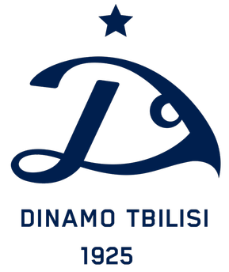

Dinamo lost last game
go to categoriesGo to articles

Dinamo Tbilisi was one of the most prominent clubs in Soviet football and a major contender in the Soviet Top League almost immediately after it was established in 1936. The club was then part of one of the leading sport societies in the Soviet Union, the All-Union Dynamo sports society which had several other divisions besides football and was sponsored by the Soviet Ministry of Internal Affairs. Its main claim to European fame was winning the Cup Winners' Cup in 1981, beating FC Carl Zeiss Jena of East Germany 2–1 in the final in Düsseldorf. It remains the only club based in Georgia to have ever lifted a trophy in European competition. Throughout its history, FC Dinamo Tbilisi produced many famous Soviet players: Boris Paichadze, Avtandil Gogoberidze, Shota Iamanidze, Mikheil Meskhi, Slava Metreveli, Murtaz Khurtsilava, Manuchar Machaidze, David Kipiani, Vladimir Gutsaev, Aleksandre Chivadze, Vitaly Daraselia, Ramaz Shengelia, and Tengiz Sulakvelidze. After the break-up of the Soviet Union, it would later produce some of the finest Georgian players such as Temur Ketsbaia, Shota Arveladze, Giorgi Kinkladze, Kakha Kaladze, and Levan Kobiashvili.